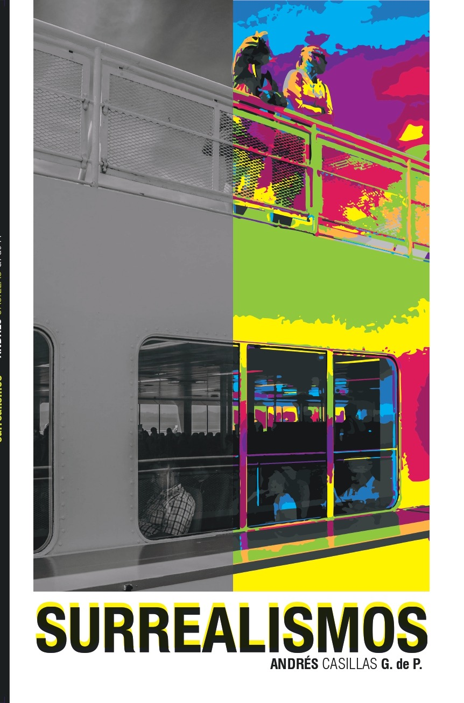
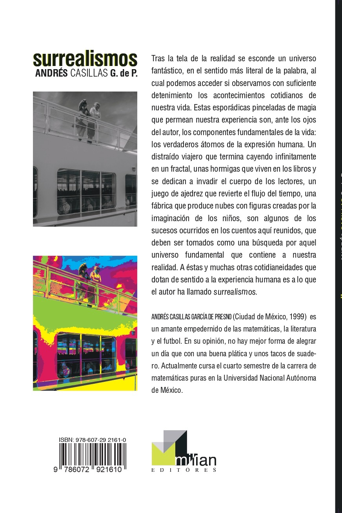

Toggle navigation
Home
CV
Projects
Cellular Automata
Books
México
Miscellaneous
📚✨📚✨📚✨📚✨📚✨📚✨
A short story fiction book that I wrote in 2020 ------->;
📚✨📚✨📚✨📚✨📚✨📚✨
📖➗📖➗📖➗📖➗📖➗📖➗
Some of my favorite math books
📖➗📖➗📖➗📖➗📖➗📖➗
A New Kind of Science, Stephen Wolfram.
Cellular Automata and Complexity, Stephen Wolfram.
A Multigrid Tutorial, William Briggs.
Theory of Complex Functions, Reinhold Remmert.
Una introducción a los fundamentos del cálculo: el infinito y los números reales, Javier Fernández García.
Indra’s Pearls: The Vision of Felix Klein, David Mumford, Caroline Series and David Wright.
Fractals Everywhere, Michael F. Barnsley.
La Historia de un Empujón, Laura Ortiz and Ernesto Rosales.
Computability Theory, Rebecca Weber.
Approximation Algorithms, Vijay Vazirani.
Godel’s Incompleteness Theorems, Raymund Smullyan.
Proofs from THE BOOK, Martin Aigner and Günter M. Ziegler.
Combinatorial Optimization, Bernhard Korte and Jens Vygen.
The Book of Prime Number Records, Paulo Ribenboim.
Hilbert y Godel: Dos perspectivas de la matemática, Carlos Torres Alcaráz
Handbook of Natural Computing, Grzegorz Rozenberg, Thomas Bäck, Joost N. Kok.
17 Lectures on Fermat Numbers: From Number Theory to Geometry, Florian Luca et. al.
🌟📖🌟📖🌟📖🌟📖🌟📖🌟📖
Some of my favorite non-math books!
🌟📖🌟📖🌟📖🌟📖🌟📖🌟📖
À la recherche du temps perdu, Marcel Proust.
Slaughterhouse Five, Galapagos, Armageddon in Retrospect, and The Sirens of Titan, Kurt Vonnegut.
El Ruletista and Lulu, Mircea Cărtărescu.
Seda, Mr. Gwyn, and Esta Historia, Alessandro Baricco.
El amor en los tiempos del cólera, Gabriel García Márquez.
La Piel Fría, Albert Sánchez Piñol.
Ficciones and El Aleph, Jorge Luis Borges.
Primevera con Esquina Rota and La Tregua, Mario Benedetti.
Las batallas en el desierto, José Emilio Pacheco.
Los años del Águila, Claude Fell.
El Bigote, Emmanuel Carrère.
Niebla, Miguel de Unamuno.
Last update: 20.11.2024

